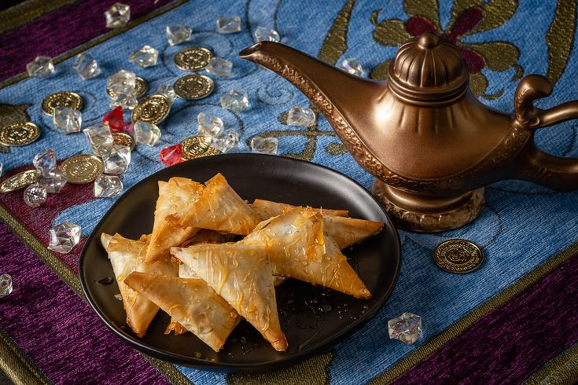
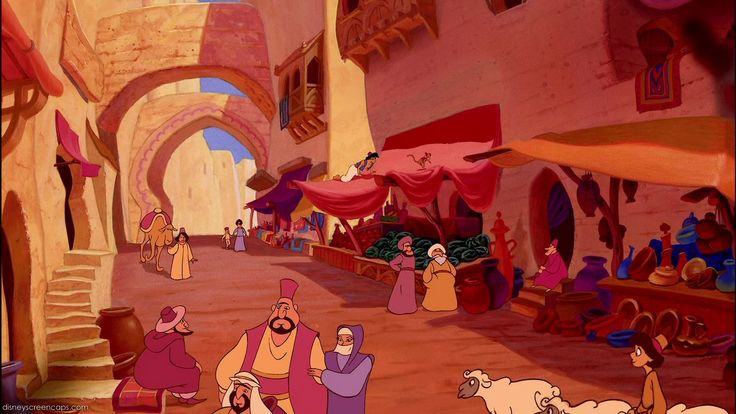

Warisan Budaya dalam Dunia Agrabah
Kisah Aladdin penuh dengan unsur budaya Timur Tengah yang kaya dan mendalam, mencerminkan kehidupan, nilai, dan tradisi yang diwariskan secara turun-temurun. Dari arsitektur istana megah dengan kubah dan menara khas, pasar yang ramai dengan warna-warni kain dan rempah, hingga pakaian tradisional, musik merdu, dan makanan khas yang menggugah selera, semuanya membawa penonton masuk ke dunia eksotis dan penuh warna yang terasa hidup.
Kisah ini juga mengangkat nilai-nilai tradisional seperti kehormatan keluarga, kebebasan memilih takdir, dan kesetiaan pada sahabat. Jasmine, sebagai putri kerajaan, menghadapi tekanan tradisi dan aturan istana yang ketat, sementara Aladdin, pemuda dari rakyat biasa, berjuang melawan stigma sosial dan keterbatasan dirinya. Konflik ini memperlihatkan bagaimana nilai budaya membentuk karakter dan perjalanan hidup mereka.
 Lebih dari itu, kisah Aladdin menunjukkan betapa pentingnya dongeng dan legenda dalam mewariskan budaya dan nilai moral. Lampu ajaib, jin, karpet terbang, dan kota Agrabah menjadi simbol magis dari budaya Arab klasik. Melalui keajaiban dan fantasi ini, cerita memperkuat identitas budaya sebagai latar kisah sekaligus mengajarkan nilai keberanian, kejujuran, dan harapan.
Siap menjelajahi pelajaran kehidupan dari kisah Aladdin? Yuk, lanjut ke halaman berikutnya!